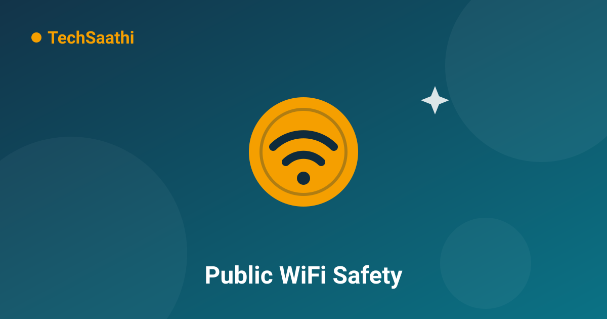

Public WiFi Safety: 9 Rules to Follow Before You Connect

Free WiFi at the railway station, airport, mall or cafe feels like a small blessing — unlimited data without touching your plan. But that convenience comes with a catch: on a public network, you are sharing the airwaves with strangers, and a few of them may be watching. The good news is that staying safe does not require technical skills. It requires nine simple habits.
1. Know the Difference Between the Real and the Fake
The oldest public WiFi attack is embarrassingly simple: a scammer sets up a hotspot with an official-sounding name like Airport_Free_WiFi_Official and waits. When in doubt, ask the staff for the exact network name, or prefer a network that is protected by a password printed on your receipt. A hotspot that needs no password and promises everything free deserves your suspicion first, not your tap.
2. Assume Someone Is Watching the Network
On an open public network, think of your traffic like postcards instead of sealed letters — anything not locked can, in theory, be read. This is why the single most important protection is already built into every website: the padlock icon and https:// in the address bar. HTTPS encrypts your data end to end, even on untrusted WiFi. Rule of thumb: if a website does not show the padlock on public WiFi, do not log in to it.
3. Never Do Banking on Public WiFi
HTTPS protects most browsing, but money matters deserve a stricter rule. UPI apps, net banking and wallet payments should wait until you are on your mobile data or home network. There is nothing urgent enough about a money transfer that it cannot wait an hour — and mobile data in India is cheap and fast almost everywhere. This one rule removes the highest-value target from the riskiest place.
4. Turn Off Sharing Before You Join
When your phone or laptop asks "Do you want your PC to be discoverable on this network?", the correct answer on public WiFi is always No. While you are at it: turn off file sharing, AirDrop-style receiving from "Everyone", and network discovery in your settings. These features exist for your home and office, not for a railway platform full of strangers.
5. Forget the Network After You Leave
Most devices remember WiFi networks and reconnect automatically. Scammers exploit this by naming their fake hotspot exactly the same as a popular free network — your phone joins it silently without asking you. The fix takes ten seconds: after using any public network, open your WiFi settings and tap Forget this network. Make it a habit like locking your screen.
6. A VPN Is the Seatbelt of Public WiFi
A VPN (Virtual Private Network) wraps all of your device's traffic in one encrypted tunnel, so even someone monitoring the network sees only scrambled data. It is the single most effective upgrade for people who use public WiFi regularly — students in hostels, travellers, remote workers in cafes. A reputable paid VPN costs less than a cup of coffee per month; free VPNs deserve caution, because the VPN itself can see everything you route through it. If you use one, choose a company with a known name and a clear privacy policy.
7. Watch Out for "Captive Portal" Traps
That login page which appears when you join station or airport WiFi is called a captive portal. Genuine ones ask for a mobile number and OTP or a simple agreement — they never ask for your bank details, card numbers, or email password. If a WiFi login page demands anything more than basic identification, that is not the venue's network asking; that is an attacker's page. Disconnect immediately.
8. Keep Bluetooth and Auto-Connect Off
WiFi is not the only radio listening on a crowded platform. Bluetooth pairing requests and auto-joining "open networks" quietly expand your attack surface. Before settling in at a public place, switch off Bluetooth if you are not using earphones, and disable the "connect to open networks automatically" option. Your battery percentage will thank you too.
9. Log Out and Lock Down Afterwards
Finished with the session? Do not just walk away. Log out of any account you signed in to (email, social media), close the browser completely, forget the network, and if you entered anything sensitive, consider changing that password once you are home. Two minutes of housekeeping keeps one careless hour from becoming a lasting problem.
Conclusion
Public WiFi is genuinely useful — the danger is not the technology but the habits around it. Browse with HTTPS, leave money transfers for mobile data, forget networks when you leave, and add a VPN if you connect often. Do these four things and the free WiFi at your station becomes what it should be: a convenience, not a risk.
Frequently Asked Questions (FAQ)
Can someone really hack my phone through public WiFi?
Not "hack" in the movie sense. What skilled attackers can do on open networks is watch unencrypted traffic, run fake hotspots, and try to trick your device into fake login pages. Modern phones with updated software resist most of this automatically — which is exactly why installing updates and using HTTPS sites matters.
Is mobile data safer than public WiFi?
Yes, significantly. Your 4G/5G connection is encrypted between your phone and your operator, and it cannot be "joined" by strangers the way WiFi can. For banking, payments and sensitive logins, mobile data is always the better choice.
Do I need a VPN if I only check social media on public WiFi?
Social media apps already use HTTPS, so the practical risk is low. A VPN becomes worthwhile when you browse varied websites, use work accounts, or travel frequently. For occasional light use, HTTPS plus the habits in this article cover you well.
Free WiFi is a privilege — use it with these rules and stay safe! 📶